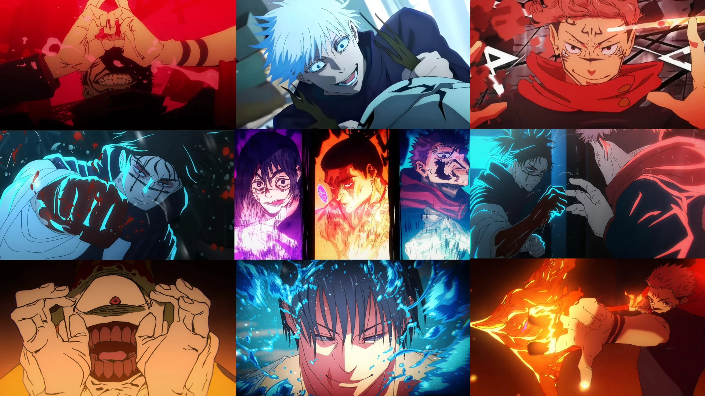
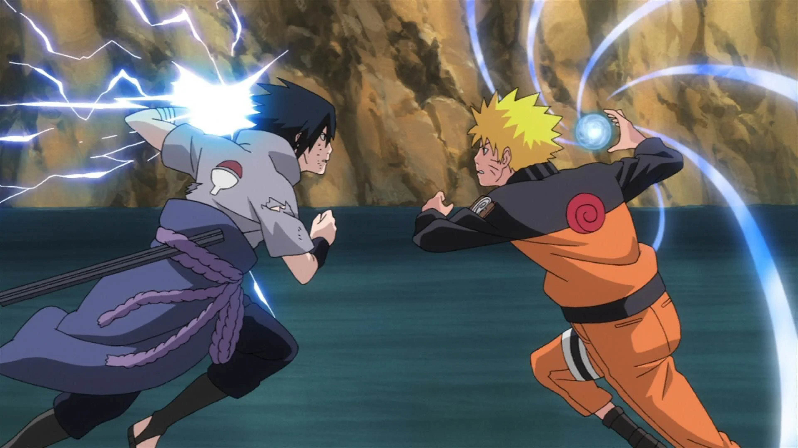

Jujutsu Kaisen (JJK)

-
Best animation I have seen in any anime series, period.
-
Ties in Japanese folklore and Buddhist ideas in an easy-to-understand way for those who don't live in Japan
-
Often times, anime incorperates ideas and religious thoughts that are often foreign to the Western world. JJK does a fantastic job of incorperating these ideas into the lore of the characters in a way that is interesting but not so foreign as to not be able to understand without further context
-
Full Metal Alchemist Brotherhood (FMAB)

-
Great world building and character development
-
Very interesting power system
-
Most animes have some sort of power system by which the show abides by. FMAB's use of "alchamy" makes for a unique and captivating action scenes and plot that is impossible to get bored of (literally. I've watched the series 4 times).
-
Naruto

-
Naruto is a classic. Most popular in the USA and, debatebly, globally.
-
Naruto follows a very classic layout for anime of which other anime's have followed suit in which 2 rivals grow as the plot progresses, continuing to become stronger. Naruto claims the most popular rivalry in all of anime
-
This is one of my first animes. While many claim that it isn't that good of an anime, it holds a special place in my heart for sure.